28. Heroku
Es una herramienta que nos permite guardar nuestro proyecto frontend en un servidor en la nuve, este a diferencia del servicio ofrecido para el backend se desactiva cuando no esta siendo manipulado.
01. removiendo 3 paquetes dev-dependencies
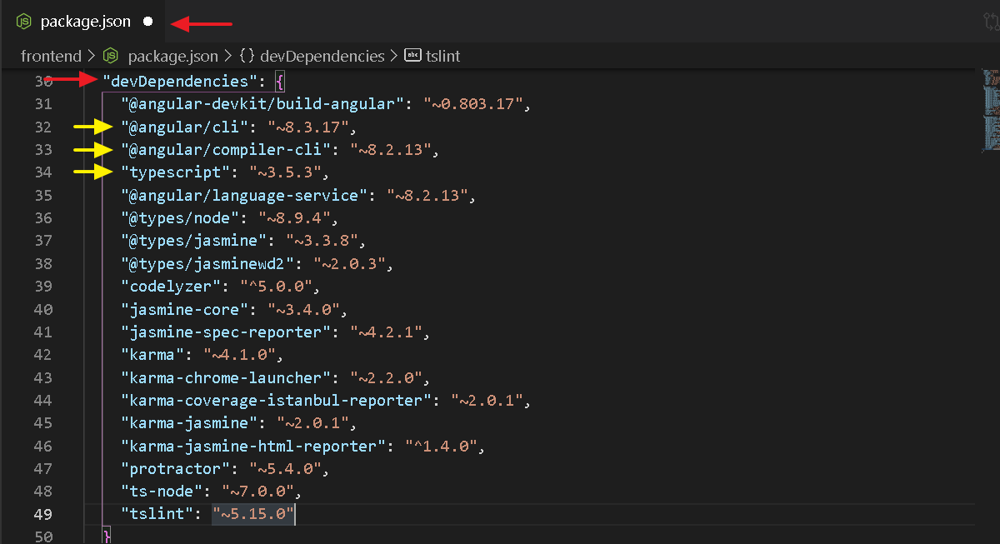
02. agregando los 3 paquetes a dependencies
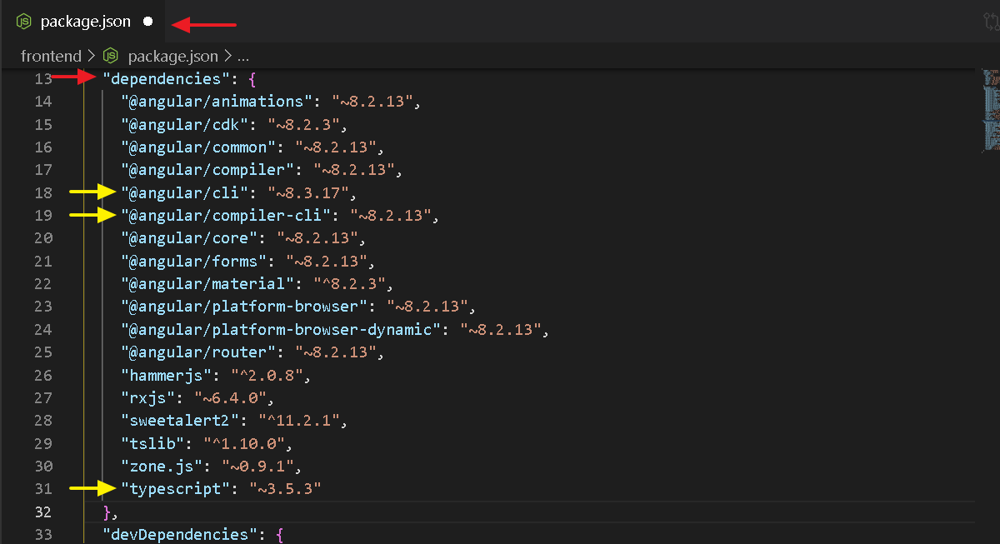
03. Definiendo el script heroku-postbuild
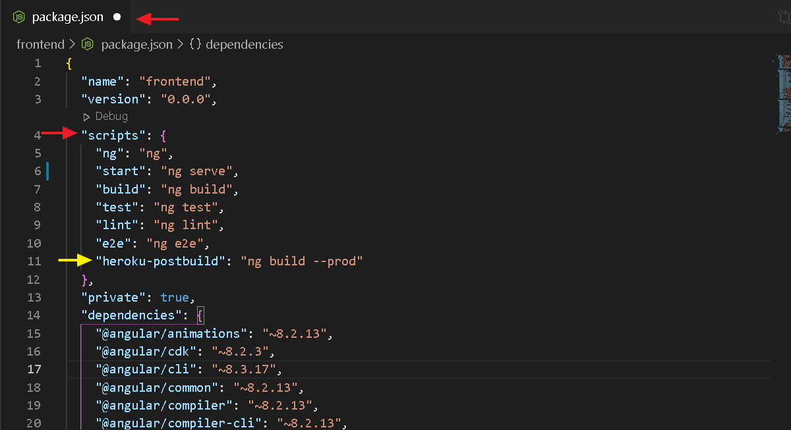
04. Definiendo las versiones de node y npm
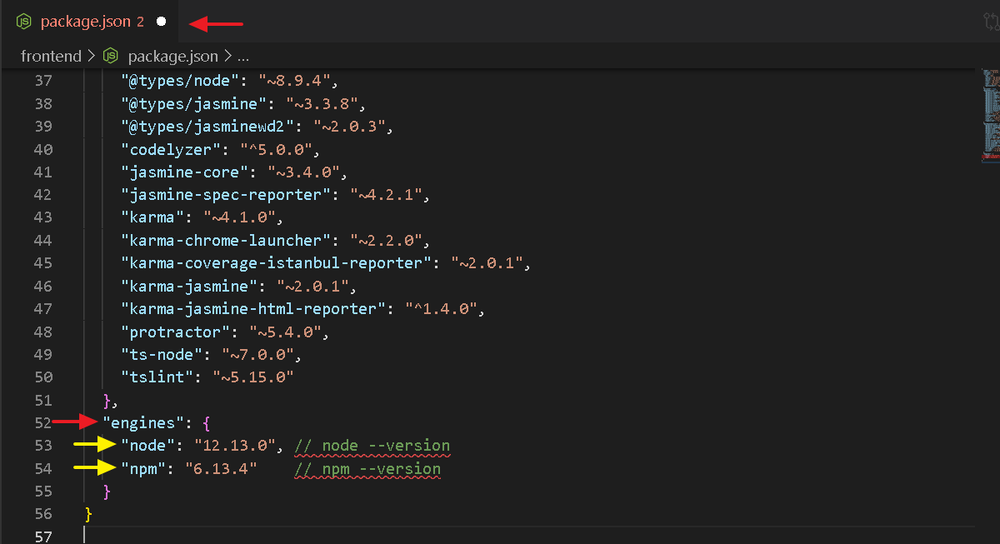
05. Modulo express y path
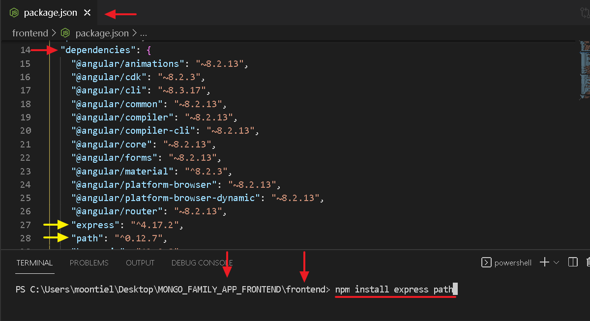
-------------------- End --------------------
01. Archivo server.js
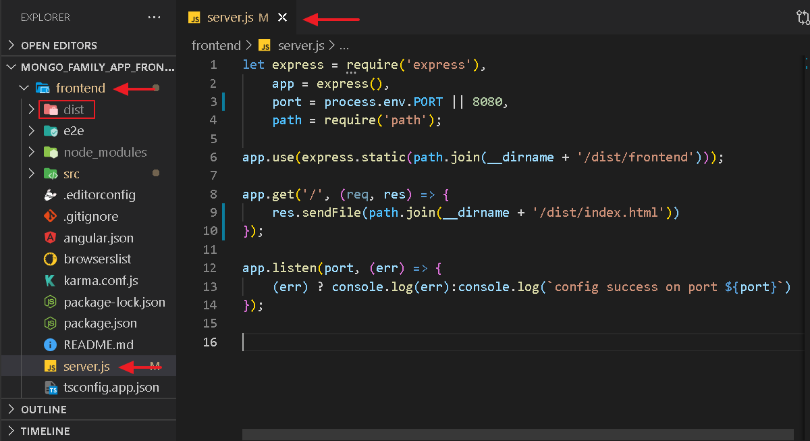
02. Definiendo el script start en package.json
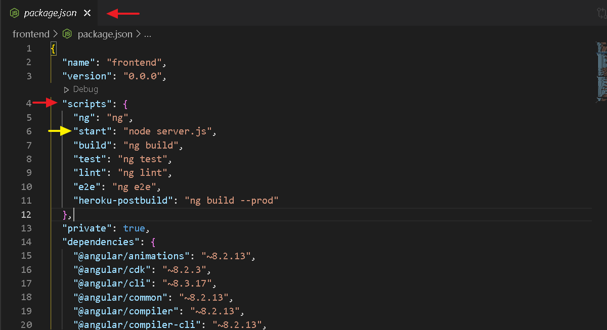
03. Corriendo el comando start
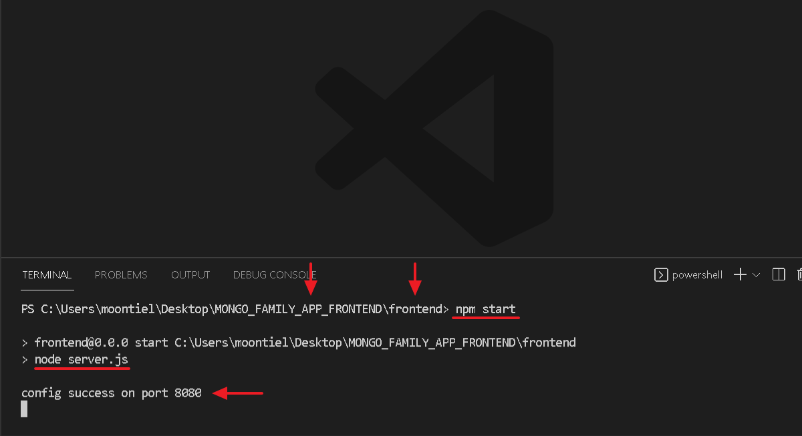
04. Validando el servidor local
-------------------- End --------------------
01. Configurando el enviroment local
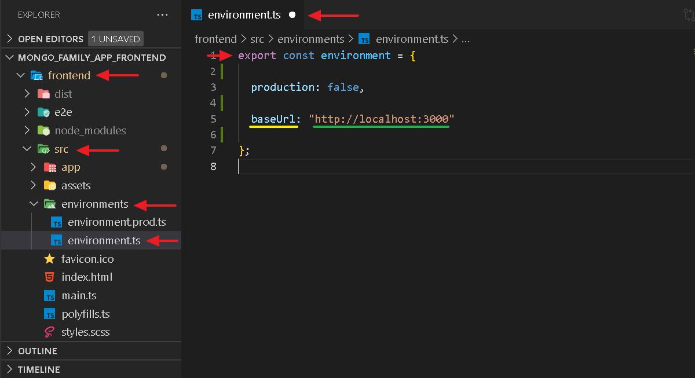
02. Implementando el enviroment local
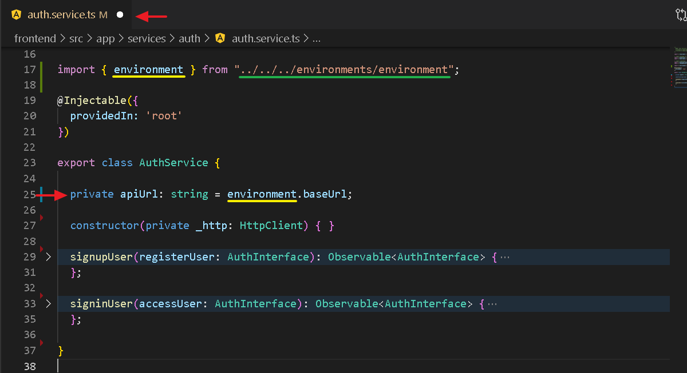
03. Url de conexion con heroku
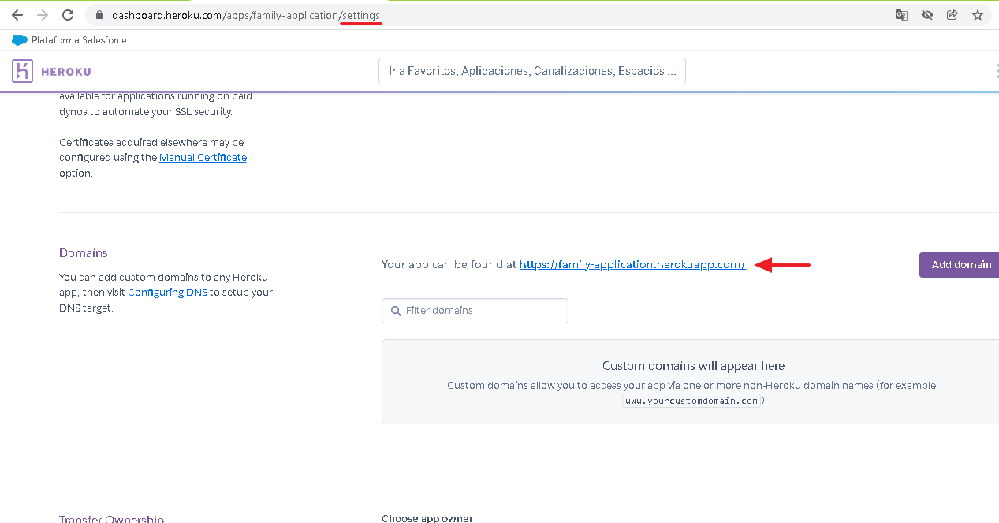
04. Configurando el enviroment de produccion
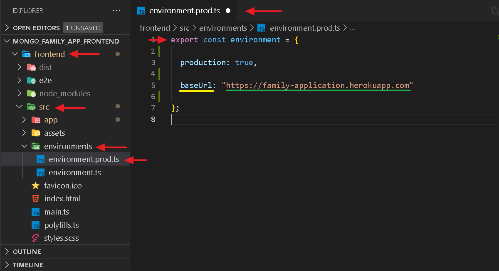
05. Validando el servidor de produccion
End Heroku